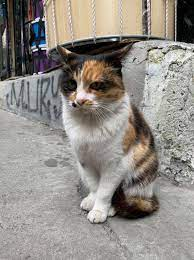

Maizie was born June 22, 2021, and is still very shy. We hope this adorable girl learns to trust soon. She has been at the shelter since December 2021. Apply at www.victoriacountyspca.com to adopt.
 CatMeet Thelma! Thelma is a 1-year-young, 50 pound, Shepherd mix. She has come up to NY from a high kill shelter in Alabama where she was found as a stray. She is fully vetted, crate trained, and good with dogs, all people, and children. Apply at www.victoriacountyspca.com to adopt.
CatHi! My name is Belle! My brother, Beast, and I were found wandering around the Redlands. Apply at www.victoriacountyspca.com to adopt
Hi! My name is Gracie! I was rescued as a stray in Sumter County, Florida, and brought to the Big Dog Ranch Rescue to find my furever home! I'm a labrador. Apply at www.victoriacountyspca.com to adopt.
DogKujo and Brownie are very active Labradors.They love the outdoors especially the beach. Apply at www.victoriacountyspca.com to adopt.
DogMeet Casey! She is a 10-month young Beagle with 23 lbs. of sweetness and playfulness! She is the most fun-loving pup just wanting for someone to love her and enjoy having fun with her! Apply at www.victoriacountyspca.com to adopt.